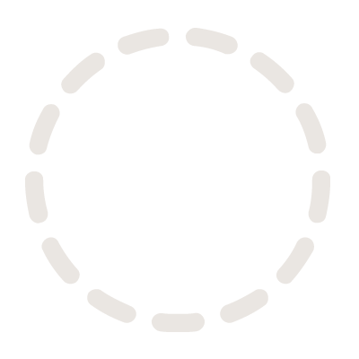

Two: Logo Division
My focus for 2020's first couple of weeks has been getting this Create*52 site up and running. I think it's important that I have somewhere to display my work, and somewhere to keep my accountable as the year progresses.
To that end, I wanted to establish a Create*52 "brand". Not that I'm going to sell anything, but more for consistency in posting and a guideline for how things should look.
I started the Create*52 brand with a logo. This exercise would not only let me work in Adobe Illustrator (always an interesting challenge), but it would give me the opportunity to simultaneously establish some style and color guides.
The finished logo is already at the top of every page, but here it is again:
The "Create" side on the left is hand-written as a nod to the creative nature of this project. The asterisk and "52" on the right is a font called Bahnschrift. I selected Bahnschrift for its tall, narrow characters, but it turned out to be a fairly interesting font in its own right! See the linked article for what I mean.
The part of the logo I'm most interested in is the background of dashed circles. I'll spare you some counting: there are 52 of them. I wanted to represent the Create*52 logo as a sort of contained tracking system, so that the logo could be dynamically filled as the weeks of 2020 go on. The number 52 worked out well for this, as its only non-self factors are 4 and 13. It just so happened that 4 and 13, when transposed into a ratio for an image, make for a decent logo size!
The dashed circle background is continued on all of the pages for Create*52 as a stand-alone repeating element. Through some CSS trickery, I was able to line up the circles in the logo image with the circles in the background, giving the site a continuous background feel.
I intend to use these repeating circles as an active element of the completed Create*52 site. More on that later!
Lastly, during the process of creating a logo I was able to create a color scheme for Create*52. This was the result of finding a primary color for the logo, and then using Adobe Illustrator's color harmony tools to determine complimentary colors.
You will see these colors repeated throughout the Create*52 design as it gets completed over the next week or so:
- #a5e67e
- #779964
- #646a99
- #e6acd5
- #998571